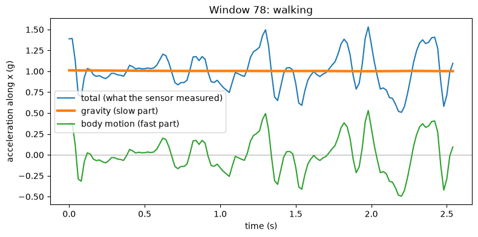
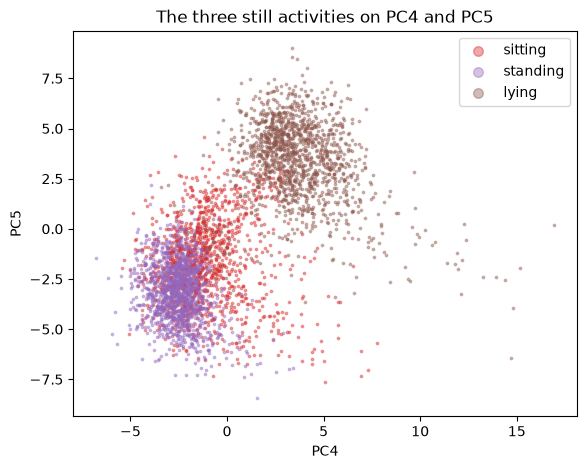
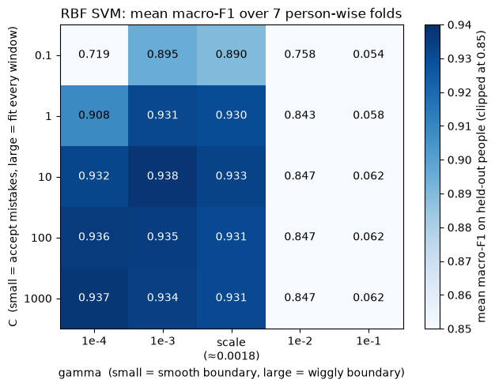
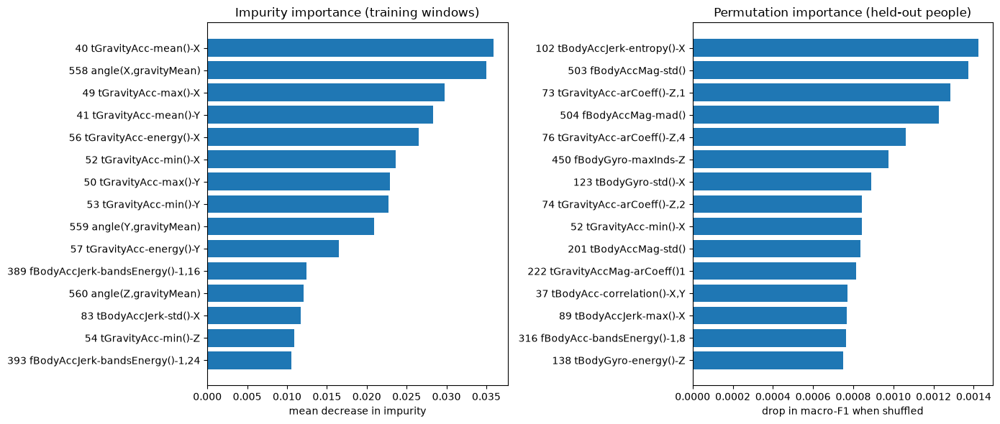
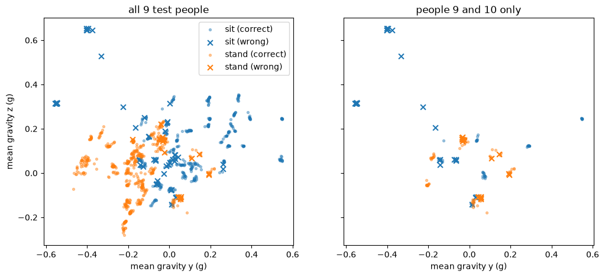

ES 335 · Machine learning project · IIT Gandhinagar
Can a phone on your waist tell what you are doing, even if it has never seen you before?
We classify 2.56-second windows of accelerometer and gyroscope readings into six everyday activities, and judge every model on people it was not trained on. Bhavya Chaudhary (25110075) and Lakshika Aswal (25110179).
(95% interval 0.906–0.975)
(always say “lying”)
(blind test, one person)
In short: a regularised linear model (lasso logistic regression) recognises the six activities of new people about 95% of the time. It never confuses moving with being still and never misses lying down. Its remaining mistakes are fine distinctions (sitting vs standing, walking vs stairs), and they are concentrated in a few people whose postures or gait differ from the people it learned from. On a different phone, worn by one of us, it scores 0.860: the same two confusions grow, and for sitting vs standing we can trace the reason to how the phone was tilted.
Results at a glance
| What | Evaluated on | Macro-F1 |
|---|---|---|
| Majority class (always “lying”) | 21 training people, 7 person-wise folds | 0.05 |
| Logistic regression, random window split (leaky) | windows, people on both sides | 0.985 ± 0.006 |
| Lasso logistic regression, C = 0.1 | 21 training people, 7 person-wise folds | 0.934 ± 0.036 |
| RBF SVM, C = 1, γ = 0.001 | 21 training people, 7 person-wise folds | 0.931 ± 0.027 |
| Random forest, 100 trees, depth 10 | 21 training people, 7 person-wise folds | 0.907 ± 0.041 |
| Final model (lasso), tested once | 9 unseen test people (95% interval over people) | 0.945 (0.906–0.975) |
| Final model, 451 phone-compatible features | our own phone, one person, blind | 0.860 |
Cross-validation rows: mean ± standard deviation over the 7 folds.
1. The problem
Bhavya| Question | Which of six activities (walking, walking upstairs, walking downstairs, sitting, standing, lying) is a new person doing, from the phone at their waist? |
|---|---|
| One row | One window of 2.56 s (128 readings at 50 Hz) from one person. |
| Target | The activity label of that window. |
| Prediction time | At the end of each window, using only that window's readings. |
| Unit of generalisation | The person. A useful app works for people it has never seen, so every evaluation holds out whole people. |
| Limits of the claim | Adults performing scripted activities in a lab, one phone model, one position (waist). We predict activities; we do not explain what causes them. |
2. The data and the physics behind it
BhavyaUCI Human Activity Recognition dataset (Anguita et al., 2013; licence CC BY 4.0). 30 volunteers wore a Samsung Galaxy S II on the waist. Recordings are cut into overlapping windows: 7,352 training windows from 21 people and 2,947 test windows from 9 people. Each window comes with 561 engineered features and with the raw signals (3-axis accelerometer in g, 3-axis gyroscope in rad/s). The data is public; we do not redistribute it (see Reproduce).
What the accelerometer measures: gravity plus motion
An accelerometer cannot tell gravity apart from movement; it measures their sum. The dataset authors separate them with a 0.3 Hz low-pass filter: the slow part is gravity (which way the phone points, so posture), and the fast part is body motion (movement).



Quality checks (training people only)
- No missing values, no duplicate rows; all 561 features already scaled to [−1, 1].
- Balanced classes (13.7–18.9% each); 281–409 windows per person, and at least 36 for every person and activity.
- Neighbouring windows overlap by half: 95.5% of consecutive same-activity windows (6,752 of 7,072) share 64 identical readings. This shapes the whole evaluation design.

3. The 561 features and PCA
LakshikaThe 561 features are a few ideas (how much the body moves, the rhythm and frequency of the movement, the orientation) repeated over 3 axes, 2 sensors, and time vs frequency domain. Only 53 describe gravity. They overlap heavily: 8,206 pairs have |r| > 0.9 (207 above 0.99), and 431 features have a near-copy.



Decision: logistic regression on 100 components scores 0.920 vs 0.933 on all 561 features, so we do not put PCA in front of the models. PCA keeps the largest variation, which is not the same as the most useful variation.
4. Evaluation design: test on people, not on windows
BhavyaA random split of windows puts near-copies (overlapping neighbours) and the same people on both sides, so it measures “recognising people already seen”. Our question is about new people, so we split by person: GroupKFold with 7 folds of 3 people each. Each model trains on 18 people and is scored on the other 3, seven times. The folds are saved to a file and every model uses the same ones, which makes comparisons fair. The 9 test people were kept out of all tuning and choosing.
| Fold | 0 | 1 | 2 | 3 | 4 | 5 | 6 |
|---|---|---|---|---|---|---|---|
| Validation people | 15, 22, 25 | 3, 8, 21 | 14, 26, 29 | 1, 6, 30 | 7, 19, 28 | 5, 16, 27 | 11, 17, 23 |
Metric: macro-F1, the average of the six per-activity F1 scores, so a model cannot look good by ignoring a hard activity. A model that always says “lying” gets accuracy 0.19 but macro-F1 only 0.05, our baseline.
Try it
Same model, two ways of testing it
Each square is one window out of 1,000; red squares are mistakes.
5. The models
Three candidate models, from simple to flexible, each tuned with the same person-wise folds. Within each model we chose a setting with the one-standard-error rule: find the best mean score, and among all settings within one standard error of it (SE = spread over the 7 folds ÷ √7), pick the simplest. Differences smaller than that are noise from which people landed in which fold.
Logistic regression
Gives each activity a score that is a weighted sum of the 561 features, and turns the six scores into probabilities with softmax. It is fitted by maximum likelihood plus a penalty on large weights: ridge (shrinks all weights) or lasso (sets many to exactly zero). The assumption is linear boundaries between activities. We reproduced one prediction by hand: for a standing window of an unseen person the scores were 16.4 for standing and 6.6 for sitting (the physically similar posture), giving 99.99% standing.
RBF support vector machine
Drops the linear assumption: the boundary can bend, with flexibility set by gamma (how local each training window's influence is) and C (how much mistakes are penalised). Gamma matters far more than C: at gamma = 0.1 every window looks unlike every other and the model collapses to 0.06.
Random forest
Many decision trees, each on a bootstrap sample with random feature subsets, voting together. Needs no scaling. The settings barely matter (all 27 between 0.891 and 0.909). We did not use the out-of-bag score, because overlapping windows from the same people would leak into it.
Try it
How tuning looked for each model
What tuning taught us
- Ridge: every C from 0.01 to 100 is within noise of the best. Differences between people (fold scores 0.885–0.981) are far larger than differences between settings.
- Lasso matches the best score using about a third of the features (161–190 of 561 at C = 0.1). But which features it keeps changes from fold to fold, because many features are near-copies, so we make no “most important features” claims.
- Random forest importance agrees: impurity and permutation importance share only 1 feature in their top 15, and shuffling any single feature costs at most 0.0014 macro-F1. Shuffling one gravity feature together with its 4 near-copies costs 0.196. Importance belongs to groups of correlated features, not to single features.


6. Choosing the final model
BhavyaThe three candidates (each model's one-SE choice) were compared fold by fold on the same people. The same one-SE rule across models gives a threshold of 0.934 − 0.014 = 0.920: lasso (0.934) and SVM (0.931) qualify, the forest (0.907) does not. Lasso vs SVM cannot be told apart (SVM is better on 2 of 7 folds, by at most 0.022), so we took the simpler one: lasso logistic regression, C = 0.1 (linear, about 180 features). The decision was written down before the test set was opened.
Try it
Each fold is a different group of 3 people
Click a model to hide or show it. Notice that “hard people” depend on the model: fold 2 is the linear models' worst fold but the forest's best; fold 1 is the forest's worst.
7. The final test: 9 people, used once
BhavyaThe chosen model was retrained on all 21 training people and evaluated once on the 9 test people (2,947 windows).
Why resample people? A person's windows are near-copies of each other, so the real sample size is 9 people, not 2,947 windows. With only 9 people, the honest claim is a range of roughly 0.91–0.97. For context only (run after the decision): the SVM scored 0.947 and the forest 0.919. The SVM–lasso gap of 0.002 is far inside that uncertainty.
Score for each test person
Most people are near-perfect; person 10 sees about 1 window in 6 wrong. The average hides that.
8. Where and why the model goes wrong
BhavyaTry it
Confusion matrix on the test people
Rows are the true activity, columns the prediction. Click any cell to see which people its windows come from.
- Two blocks, almost nothing between them. 74 errors among the still postures (sit → stand 55, stand → sit 19), 82 among the walking types (up → walk 36, down → up 33), and only 4 between moving and still. Lying is perfect (537 of 537).
- Errors are concentrated. People 10, 9 and 20 make 113 of the 160 errors (71%); person 24 makes none. Stairs errors are person-specific (down → up comes only from people 20 and 18). Sit → stand appears in 7 of 9 people, so it is a weakness of the method rather than of one person.

Try it
Could an app say “not sure” instead of being wrong?
The model gives a probability for its answer. Suppose the app only answers when that confidence is at least the threshold, and says “not sure” otherwise.
At 0.9 the app stays silent on about 22% of windows but avoids about 86% of its mistakes. The mistakes that remain are the confident ones, mostly the unfamiliar sitting posture of person 10. Confidence cannot flag what the model has never seen.
9. A blind test on our own phone
LakshikaEverything above comes from one dataset, recorded in one lab with one phone. To see whether the model holds up outside it, Bhavya recorded all six activities on a different phone, and we ran the final model on those recordings. The model and its setting were fixed in Part 7 before the recordings were made, and nothing was tuned on them.
From a phone recording to UCI-style features
- Loadphyphox CSV; m/s² → g, gyroscope in rad/s
- Cleaneven time grid, median filter, 20 Hz Butterworth
- Resampleto 50 Hz, like UCI
- Split gravity0.3 Hz Butterworth (causal); body = total − gravity
- Window2.56 s, 50% overlap; first and last 5 s cut
- Features451 of the 561, on UCI's [−1, 1] scale
We checked the pipeline on UCI's own raw training signals before using it on a phone:
- 451 of the 561 features are reproduced (correlation ≥ 0.99 with the dataset's values). The other 110 cannot be: the dataset does not define its entropy, its gravity-magnitude columns are copies of the body-magnitude ones, and some gravity and high-frequency jerk features are unstable.
- Our 0.3 Hz filter gives the dataset's gravity signal to within 0.002 g (median), using a causal filter (a zero-delay filter is about 4× further off).
- Logistic regression on our recomputed 451 features scores 0.931, vs 0.933 on all 561 provided features.

The recordings
| Who and what | Person “bhavya”, 14 Nov 2026. vivo V2439 (Android 16), phyphox app, accelerometer with gravity + gyroscope at 50 Hz. |
|---|---|
| Position | Waist, on the side of the hip, landscape, screen facing outward; the same for every recording. |
| Amount | About 67 s per activity (lying 83 s): 43 windows per activity, 55 for lying, 270 in total. |
| Orientation | Standing gives gravity x, y, z = 1.00, 0.01, 0.17 g (UCI training average: 1.00, −0.16, −0.03), so no axis remapping was needed. But the phone leans about 0.2 g further towards z than UCI's phone in every posture. |
The model
The final model takes 561 features, and the phone can deliver only 451. So we trained the same pipeline with the same setting (lasso, C = 0.1) on those 451 features of the 21 training people. With the same person-wise folds it scores 0.926 ± 0.042, against 0.934 ± 0.036 with all 561: lower on every fold, but the average drop (0.008) is smaller than one standard error (0.014).
(accuracy 0.870, 235 of 270 windows)
(walking and lying: 1.000)
(but only 56% of windows get there)
Try it
Confusion matrix on the phone recordings
Rows are the true activity, columns the prediction. Click a cell to see when, within its recording, those windows happened.
Recall per activity: UCI test people vs our phone
The phone loses accuracy in the same two blocks where the test people made their mistakes: the walking types (here upstairs, mostly called “walking”) and sitting vs standing. Walking, downstairs and lying stay near-perfect, and moving vs still is confused only twice in 270 windows.
Why sitting vs standing fails: the tilt of the phone
For the 21 training people, sitting and standing differ mostly along gravity y (averages: sitting +0.14 g, standing −0.16 g). On this phone, worn on the side of the hip, both postures sit at y ≈ 0, right on the border between the two clouds. They differ only along z (0.34 vs 0.17 g), a direction in which the training people's postures overlap. So the tilt the model relies on is nearly the same for both postures. This resembles what Part 8 found for test people 9 and 10.
Is the model's confidence still trustworthy?
When the model is very confident it is still almost always right on the new phone. It is just very confident less often, and it is unsure in the right places: its mean confidence is lowest for upstairs and sitting.
Context only: smoothing over consecutive windows
An app sees a stream of windows, so it could report the majority vote of the last few windows instead of each window alone. On the phone recordings this raises macro-F1 from 0.860 to 0.870 (last 3 windows) and 0.886 (last 5). This is not part of the final model and was not used to choose anything.
Caveat. This is one person, one phone, one session, with one recording per activity. There is nothing to resample that would say how the model does for other people or phones, so we give no interval. The result shows that the model transfers, and how it fails; it does not estimate how well it works for people in general.
10. Limitations
- Who it learned from: 21 adults doing scripted activities in a lab with one phone model at one position. Other placements, phones, ages and free-living behaviour are untested here, apart from our one-person phone test (section 9).
- Unfamiliar postures fail confidently. The model only knows postures like its training people's.
- Few people. 9 test people give a wide interval (0.906–0.975), and individuals range from 0.83 to 1.00.
- Correlated errors. Windows within a bout and a person are not independent evidence.
- One window at a time. Activities last many windows; smoothing predictions over time could fix isolated errors. It is not part of the final model and was only tried as context on our phone recordings (a vote over the last 5 windows: 0.860 → 0.886).
- No transitions (e.g. standing up) in the six classes.
- Prediction, not explanation. Feature choices and importances are unstable among correlated features, so we make no causal claims.
11. Reproduce it, and who did what
- Code: github.com/chaudharybhavya/ML_HAR. Notebooks
01–10, run in order; shared settings inconfig.py(SEED = 42). - Data: download the UCI HAR dataset from the UCI repository and unzip it to
data/raw/UCI HAR Dataset/. It is not stored in the repository. - Split: the person → fold table is saved in
results/folds.csv; all fold scores are saved inresults/cv_*.csv; the final test predictions are inresults/test_predictions_lasso.csv. This page is built from those files. - Phone test: the recordings are in
data/phone/bhavya/; their windows and features inresults/phone_features_bhavya.csv, the predictions inresults/phone_predictions_bhavya.csv. The phone section of this page is built from them bydocs/make_phone_data.py. - Hardware: a laptop CPU, no GPU. The lasso fits are the slowest steps: about 25 minutes in
04, and about 50 minutes for the eight fits in10on battery power.
Contributions
| Bhavya Chaudhary (25110075) | Raw signals and physics, data audit, evaluation design (person-wise folds, baseline, leakage experiment), logistic regression (ridge vs lasso), model selection and final test, error analysis, phone recordings. |
|---|---|
| Lakshika Aswal (25110179) | Features and PCA, RBF SVM, random forest and feature importance, phone signal pipeline and phone recordings test. |
| Both | Project setup, this website, README. |
Use of AI tools
We used Claude (Anthropic) as a tutor and assistant. It explained concepts and the physics of the data, suggested code cell by cell, which we typed, ran and checked ourselves, helped with debugging, drafted parts of the README and notebook summaries, and built the structure and interactive charts of this website from our saved results. We checked the reported numbers against our notebooks and are responsible for all results.
12. References
- Anguita, D., Ghio, A., Oneto, L., Parra, X. and Reyes-Ortiz, J. L. (2013). A public domain dataset for human activity recognition using smartphones. ESANN 2013. Dataset: UCI Machine Learning Repository, CC BY 4.0.
- Tibshirani, R. (1996). Regression shrinkage and selection via the lasso. Journal of the Royal Statistical Society, Series B, 58(1), 267–288.
- Cortes, C. and Vapnik, V. (1995). Support-vector networks. Machine Learning, 20(3), 273–297.
- Breiman, L. (2001). Random forests. Machine Learning, 45(1), 5–32.
- Hastie, T., Tibshirani, R. and Friedman, J. (2009). The Elements of Statistical Learning, 2nd ed. Springer. (Cross-validation and the one-standard-error rule: section 7.10.)
- Efron, B. and Tibshirani, R. J. (1993). An Introduction to the Bootstrap. Chapman & Hall.
- Pedregosa, F. et al. (2011). Scikit-learn: machine learning in Python. Journal of Machine Learning Research, 12, 2825–2830.
- Staacks, S., Hütz, S., Heinke, H. and Stampfer, C. (2018). Advanced tools for smartphone-based experiments: phyphox. Physics Education, 53(4), 045009.